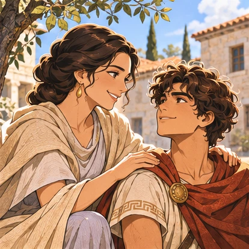
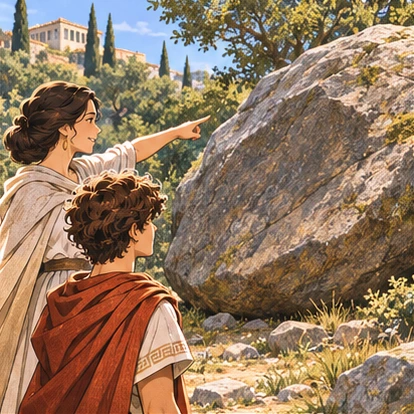
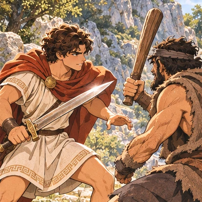

Theseus and the Maze of Big Choices
A story about courage, friendship, promises, and the choices that shape a hero.
Ages 8+ · Target Lexile 210L
Read the complete original text · Character Bible

A Boy in Greece
Long ago, in Greece, there was a boy named Theseus. He lived with his mom, Aethra.

The Big Rock
One day, his mom took him to a big rock. His dad had left a gift under it.

One More Try
Theseus pushed the rock. He pushed again, and at last the rock moved!

A Gift from His Father
Under the rock were a sword and a pair of shoes. They had belonged to his dad, King Aegeus of Athens.

Ready to Go
Aethra told Theseus he was ready to meet his dad. Theseus wanted to make his mom proud.

The Long Road
Theseus could take a boat to Athens. But he chose the long road, even though it was not safe.

Courage on the Road
Bad men hurt people on the road. Theseus was scared, but he fought them and stopped them.

A Safer Journey
Theseus helped keep the road safe. At last, he came to Athens.

Home at Last
King Aegeus saw the sword and shoes and knew his son. They gave each other a big hug.